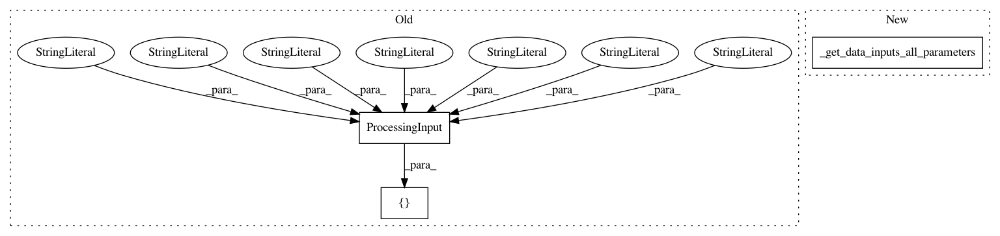

64371d3d35e2df2c03b26345a33ca82b6a6ac4be,tests/unit/test_processing.py,,test_processor_with_all_parameters,#Any#,425
Before Change
)
processor.run(
inputs=[
ProcessingInput(
source="s3://path/to/my/dataset/census.csv",
destination="/container/path/",
input_name="my_dataset",
s3_data_type="S3Prefix",
s3_input_mode="File",
s3_data_distribution_type="FullyReplicated",
s3_compression_type="None",
)
],
outputs=[
ProcessingOutput(
source="/container/path/",
After Change
)
processor.run(
inputs=_get_data_inputs_all_parameters(),
outputs=_get_data_outputs_all_parameters(),
arguments=["--drop-columns", ""SelfEmployed""],
wait=True,
In pattern: SUPERPATTERN
Frequency: 3
Non-data size: 3
Instances
Project Name: aws/sagemaker-python-sdk
Commit Name: 64371d3d35e2df2c03b26345a33ca82b6a6ac4be
Time: 2020-12-16
Author: 64932716+guoqiaoli1992@users.noreply.github.com
File Name: tests/unit/test_processing.py
Class Name:
Method Name: test_processor_with_all_parameters
Project Name: aws/sagemaker-python-sdk
Commit Name: 64371d3d35e2df2c03b26345a33ca82b6a6ac4be
Time: 2020-12-16
Author: 64932716+guoqiaoli1992@users.noreply.github.com
File Name: tests/unit/test_processing.py
Class Name:
Method Name: test_sklearn_with_all_parameters
Project Name: aws/sagemaker-python-sdk
Commit Name: 64371d3d35e2df2c03b26345a33ca82b6a6ac4be
Time: 2020-12-16
Author: 64932716+guoqiaoli1992@users.noreply.github.com
File Name: tests/unit/test_processing.py
Class Name:
Method Name: test_script_processor_with_all_parameters